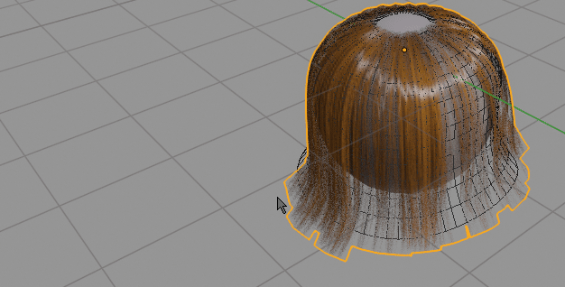
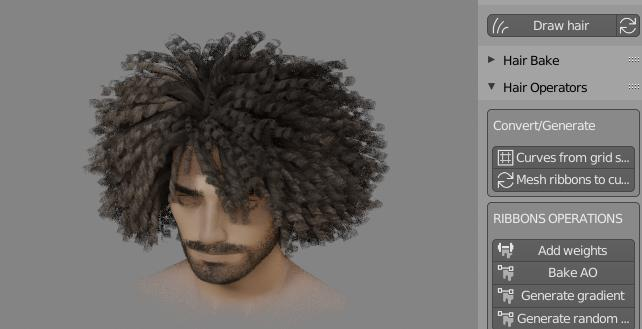
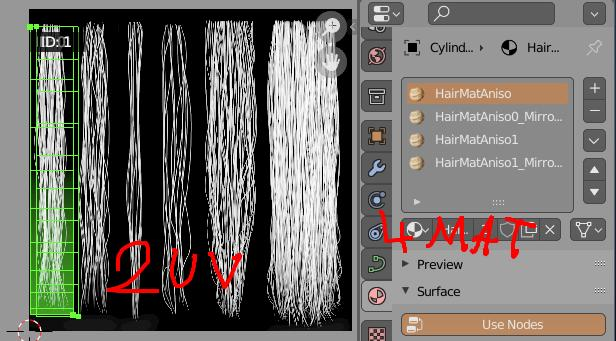
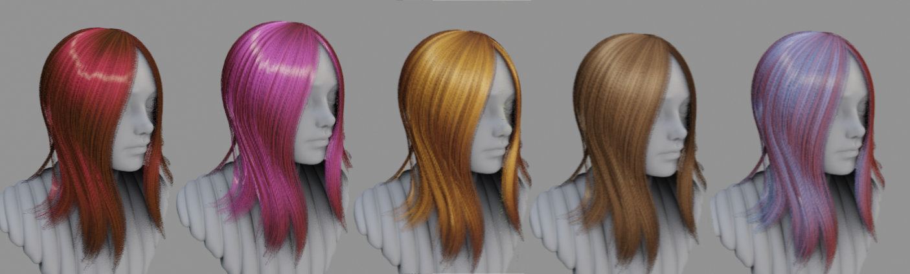
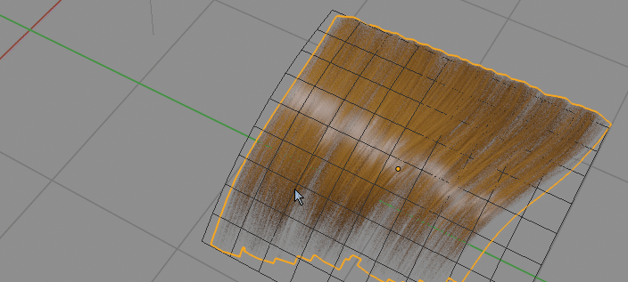

Hair UV and Material setup¶
Hair UV's¶
In Hair Tool you are expected to work on hair in curve mode; Hair Tool stores curves UV data is in curve materials (it is workaround due to limitation of Blender curve UVs). As a result if you have two curve hair objects sharing same material, they both will share same UV too. If you wan to separate UVs, then you have to separate (un-instance) material on both curves. If you want two curves to have same UV - just link Material from one to the other.
Here is video explaining material creation
Optimal UV workflow¶
The optimal workflow for creation an assigning hair UVs (UVs are stored in hairs material):
- Select curve hair object
- Define UV regions like shown in Defining UVs. This will create hair materials that holds UV data
- Manually assign UV's boxes to selected strands with Set UV region
- Link materials (that hold UV's) created in second step, to other hair object and repeat third step
Note1: Do not use Blender's buildin 'Convert-To->Mesh' operator on curve hair, or your output mesh UVs will be messed up. Instead use Curve ribbons to mesh ribbons. This way curve Material UVs will be properly, converted to mesh UVs.
Defining UV's¶
Defining UV regions in Hair Tool from UV image editor
How to create curve hair UVs:
- open UV Image Editor and press ‘Hair UV’ button located in top header bar - on far right
- next use Left Click and drag rectangular shape, to define the UV bounds for texture mapping. You can drag corners of existing UV box to adjust its shape.
- To remove UV box, hover your mouse over one of uv boxes and press [Delete] key
- To reset UV press Shift + Delete
Each UV box will create one material. So if you made 5 UV boxes, then addon will create 5 materials (times two if you have enabled 'Random UV flip' in addon preferences).
Note1: 'Random UV flip' option in addon preferences, will create additional X-axis mirrored UVs, that can be randomly assigned to hair strands. This doubles material count
Note2: If you want to flip strand texture in Y direction, just hover your mouse over UV box and press 'F'!
Offset UV¶
It moves UV points more toward the root or tip on hair strand. As a result you can stretch UVs and change texture look. See video below:
To use UV Offset just hover you mouse over UV box and scroll with MMB.
Material / UV Refresh¶
Hair Tool is assigning multiple materials to hair curve object, as workaround for lack of UV re-mapping on curves. However, if you want to change hair material you would have to: - modify first material slot - then manually change all remaining material slots one by one.
This is where 'Material / UV Refresh' comes to rescue. Changes done to first material slot, will be automatically propagated to remaining material slot when you use 'Material / UV Refresh'.
 Material / UV Refresh with random seed option. It changes random hair strands materials assignment
Set UV region¶
Map selected strands UV to specific uv box by its ID number
Note: UV box ID numbers can be previewed using 'Hair UV' button see: Defining UVs
In Hair Tool UV is stored in material data. This means if you made three UV boxes then addon will create/assign three materials to selected object (if you enabled 'Random UV flip' in addons preferences, then mat count is doubled). Those three materials (UV boxes), can be assigned to each curve strand using 'Set UV region'
Note: you can assign material slots to hair strands manually using Blender's build-in 'Assign' button from Material Tab, but 'Set UV region' provides additional randomization option - where selected strands will randomly pick one of selected UV boxes IDs.
Set selected strands UV to one of three, user defined, UV boxes by using theirs IDs. Shift select multiple IDs to assign UV regions randomly
Auto UV¶
Instead of manually assigning UV regions to hair strands with Set UV Region we can automate this task with Auto UV option. It will randomly assign selected UV Regions/materials to hair strands.
Here we assign selected UV regions (1-red, 2-green, 3-blue) using Auto UV. We can also assign UV/Material based on strands length with 'Length masked Uvs'
Hair UV Curls¶
 This option allows creating low-poly curly hair effect on hair objects that have round profile (resulting in pipe like curves). Curly UV's settings are stored in material, thus each material can have unique curls look. On the other hand if your hair have one material, then all curls will look exactly the same on all splines.
We can assign UV curls for individual UV regions one by one. Or shift select multiple IDs to assign UV Curls to multiple regions (with optional randomization - by setting min range value)
In the above video I used two UV Regions, thus we get two materials (plus additional two for the mirrored UV). So in total we get four unique curls looks. 
Default Hair Material¶
Hair Tool has build in hair shader, great for realtime preview in EEVEE. It is using simplified texture setup - all you need it opacity texture. To use it go to Ctrl+Shift+H Pie Menu, and run: 
- 'Import Default Hair material'
Material will be imported and assigned to selected curve ribbons.
Anisotropic switch¶
This is helper function to fix anisotropic specular direction when converting curve ribbons to mesh ribbons.
 Switching from curve ribbons to mesh ribbons break specular direction. 'Anisotropic switch' fixes that.